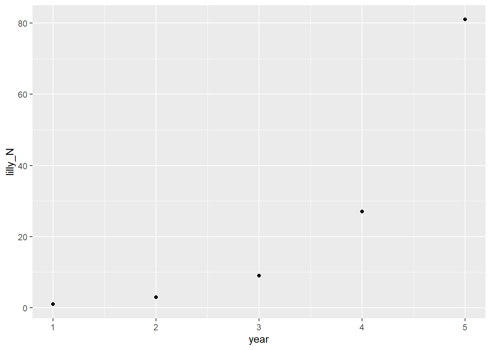
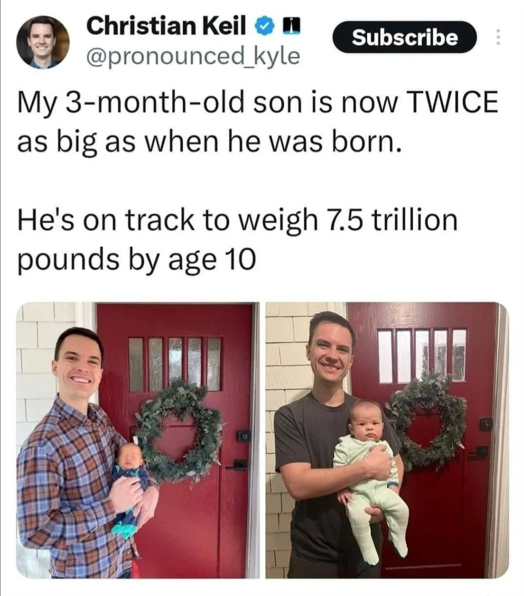
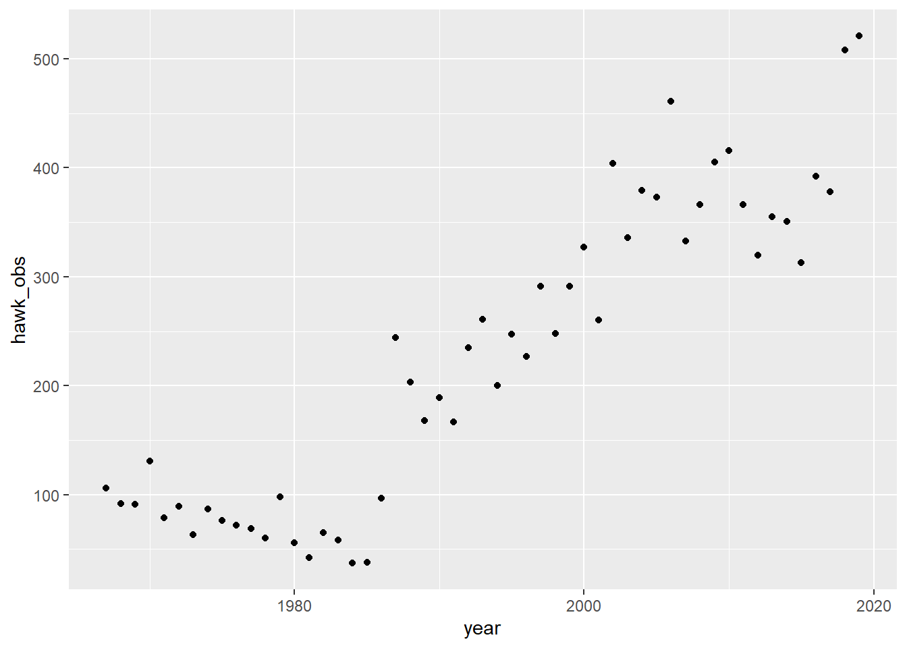
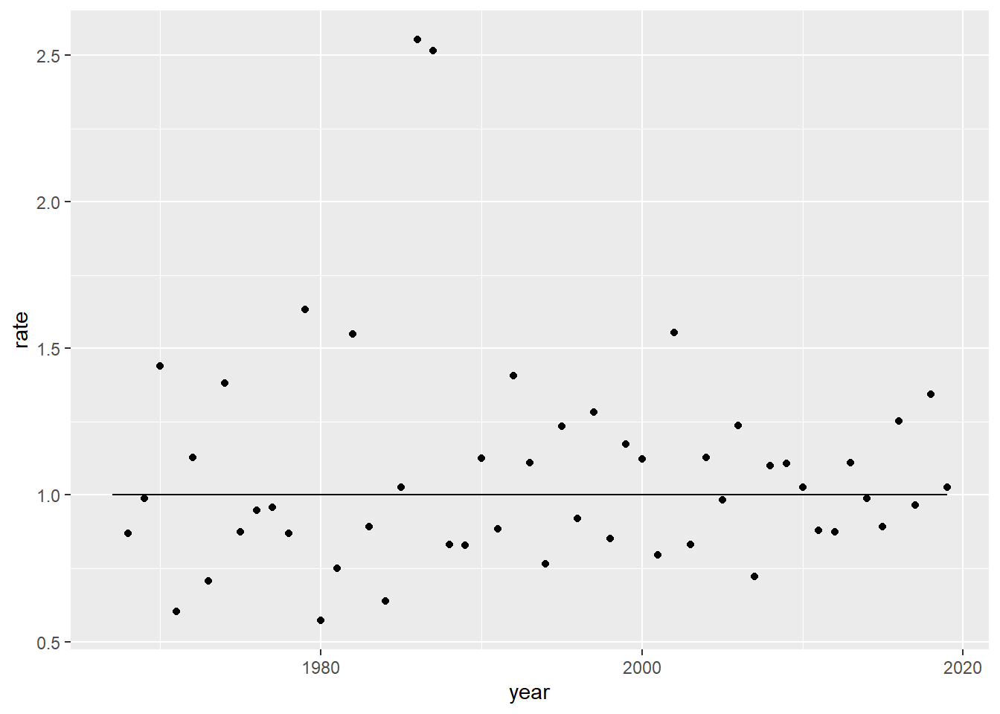
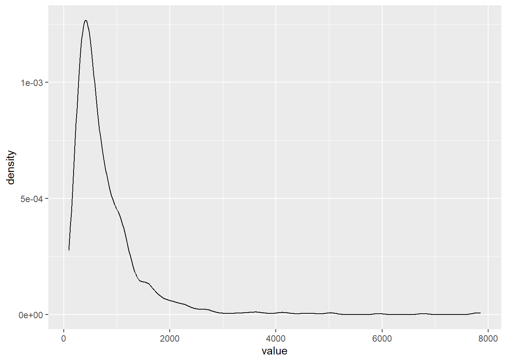

tibble::tibble(lilly_N = c(1,3,9,27,81),
year = 1:5) |>
ggplot2::ggplot() +
ggplot2::aes(x = year, y = lilly_N) +
ggplot2::geom_point()
Compounding Interest in Animals
Peter Licari ![]()
I’m trying something new on the blog. I always liked the principle of working with the metaphorical garage door open. So I’m going to be posting my musings and workings-through of various resources.
Today, I’m starting M. Henry H. Stevens’ A Primer of Ecology with R1 . Shockingly, ecological methods weren’t touched on a lot in my graduate studies in *checks diploma on the wall* political science. But I often find myself confronted with questions that don’t lend themselves to GLMM’s very well. Questions about “customer life-stages”, “competitive environments2”, “interrelations”, and the like—as well as things that seem like (from my limited understanding) they could be readily analogized to ecological processes. The kind of processes that just have to have had approaches developed by now. (Like, what happens when one “species” joins an environment—or goes extinct). Plus, it’s an opportunity to learn new stats things and answer new questions!
Don’t expect my code to be the cleanest or most perfect here. I’m more just trying to get things down quickly rather than perfectly. If anything, take the shitty design choices as proof that this was, in fact, written lovingly by human hands.
Stevens introduces the concepts of “models” for the audience (“an abstraction of reality…designed to caputre particular key features of these potentially complex systems”) and identifies three primary goals in modeling generally.
Which should be pretty familiar for anyone doing this stuff long enough. I would add (darn mixed-methods training) that description is also a common aim.
One of the simplest models in ecology, per Stevens, is “density independent growth” where growth spawned from the individual occurs regardless of the context of the rest of the population. In this simple case, a cell divides into 2 regardless of whether its on its own or surrounded by other cells. It is:
[A] lack of a statistical relation between the density of a population and its per capita rate growth.
I would personally quibble with “statistical” here as, per his own notes immediately after, the presence/absence of a statistical relationship depends on a number of things that aren’t directly related to whether a relationship truly is(n’t) there. A better word, to me, would be “theoretical”. In any event, using a theoretical water lilly that triples in number every year, Stevens argues that we want a model to help us with the goals of prediction (how many next year), explanation (at least a mechanistic one), and generalization (what will happen with other lillies?). Here’s a rough translation of the lilly example:
tibble::tibble(lilly_N = c(1,3,9,27,81),
year = 1:5) |>
ggplot2::ggplot() +
ggplot2::aes(x = year, y = lilly_N) +
ggplot2::geom_point()
Well that right there is a handy case of exponential growth! 3^{(x-1)}. (The minus 1 is there just because 1 is my 0th year. Maybe I should’ve done this in Python?) The generalization he employs though, is N_t = \lambda^tN_0. Which makes sense; it’s pretty easy to translate between the two. We can project the population size for an arbitrary period like so:
predict_geometric_population <- function(t, lambda, initial){
return((lambda^t)*initial)
}
predict_geometric_population(t = 10, lambda = 3, initial = 1)[1] 59049Wow, that’s a lot of lillypads in ten years! It reminds me a lot of this joke:

Whenever \lambda is > 1, the population grows. When \lambda < 1, it shrinks. When it’s 1, it does a secret third thing (stay the same).
However, real data is rarely so kind to us. Noise will find a way to sneak in there. So, to find \lambda, you’ll want to use the geometric mean: (\Pi r_i)^{1/t}. Here, r_i would be the rate of increase between observations, rather than observations themselves.
Of course, we don’t have to limit ourselves to discrete cases. We can continuous cases as well. So here comes e! Specifically, e^r, where r is the rate of increase.
The equation in the book is: N_t = N_0e^{rt}. Which looks familiar…what if I just called N_0 my principle, p: pe^{rt}. Shit, I owe my middle school math teacher an apology for wondering when this would ever crop up again…
The book then describes how to calculate the doubling time (pretty simple arthimetic). The nthing time can be written out in the following function:
time_until_pop_ns <- function(r, n = 2){
return(log(n)/r)
}
time_until_pop_ns(2)[1] 0.3465736Meaning, with exponential growth of rate 2, it takes 0.346 time periods to double. Let’s see how many time periods it’d take for something invested in a bank account to double with the average of the S&P (about 7 percent)
time_until_pop_ns(1.07)[1] 0.6478011It’ll take about .65 time periods to double with continuous compound growth! Man, no wonder my bank only assesses interest monthly…
The book goes on to show that \lambda and r are directly related since e^r is the rate in the continuous case and \lambda is the rate in the discrete case.
One thing I find worth noodling over is this section of the text where he heads off objections about the over simplification of this approach.
I am not saying that competition is not occurring, or that no death is occuring, or that all individuals are reproductively viable, or there is no abiotic disturbance, or that there is no popullation genetic structure. I am just saying that for the time period of interest, all things balance out, or are of no substantive consequence.
I think a lot of people underestimate the predictive accuracy that can come with even simple models. Their instinct seems to be that, because reality is complicated, models need to be as well. That if we don’t include X, Y, Z in the model, we’re saying it effectively doesn’t exist in the system. But that’s not at all what we’re saying. We’re saying that X, Y, Z may not bear importance on this particular substantive question. Not because they’re absent from the system but because they operate in such a way that we can gain a lot by not overcomplicating things.
That said, and Stevens would readily agree I think, models do frequently need to be more complicated than this. Still! It’s a very good tool to have.
The book uses Song Sparrows in Ohio to reinforce the data. I’m going to use my favorite Florida bird instead: The red shouldered hawk. Here are their observation numbers from 1967 through 20193:
hawk_tibble = tibble::tibble(
hawk_obs = c(106,92,91,131,79,89,63,87,76,72,
69,60,98,56,42,65,58,37,38,97,244,203,168,189,
167,235,261,200,247,227,291,248,291,327,260,404,
336,379,373,461,333,366,405,416,366,320,355,351,
313,392,378,508,521),
year = 1967:2019)
ggplot2::ggplot(hawk_tibble) +
ggplot2::aes(x = year, y = hawk_obs) +
ggplot2::geom_point()
Heck yeah, line go up—go birbs go!
Let’s figure out what our year-over-year increases have been over time:
hawk_tibble |>
dplyr::mutate(rate = hawk_obs/dplyr::lag(hawk_obs)) |>
tidyr::drop_na() |> # first year has no lag, so it's NA.
ggplot2::ggplot() +
ggplot2::aes(x = year, y = rate) +
ggplot2::geom_point() +
ggplot2::annotate("segment", x =1967, xend = 2019, y = 1)
How to project into 2025? Well, one way could be to find the \lambda and then carry it 6 years forward.
lambda <- hawk_tibble |>
dplyr::mutate(rate = hawk_obs/dplyr::lag(hawk_obs)) |>
tidyr::drop_na() |>
dplyr::summarise(lambda = exp(mean(log(rate)))) |> # Nifty little trick. Hats off to google search AI for this one.
unlist()
(hawk_tibble[nrow(hawk_tibble),'hawk_obs']) * lambda^(2025-2019) hawk_obs
1 626.08It estimates the population should be about 625. I actually happen to have the 2025 population handy! And it is…428. Oof. Swing and a miss!
A better way to simulate it would be to sample 6 rates from the series. If we did that, say, 1000 times, we could bootstrap some confidence intervals around it.
hawk_tibble <- hawk_tibble |>
dplyr::mutate(rate = hawk_obs/dplyr::lag(hawk_obs))
get_mult_n_rates <- function(n_rates = 6){
exp(sum(log(sample(hawk_tibble$rate, n_rates, replace = TRUE))))
}
estimate_hawk_pop <- function(start_val = hawk_tibble[[nrow(hawk_tibble),'hawk_obs']], n_rates = 6){
(start_val * get_mult_n_rates(n_rates))
}
simulated_hawks <- replicate(1000,estimate_hawk_pop()) |>
tibble::as_tibble()
simulated_hawks|>
ggplot2::ggplot() +
ggplot2::aes(x = value) +
ggplot2::geom_density()Warning: Removed 88 rows containing non-finite outside the scale range
(`stat_density()`).
Dang! Look at that long tail! Could you imagine all of those hawks?! These birds are slouching!
This is one of those cases where the median will be useful:
quantile(simulated_hawks$value, c(.05, .25,.5,.75, .95), na.rm = T) 5% 25% 50% 75% 95%
204.4913 381.4887 576.5690 957.7580 1993.8073 It looks like the actual value is located on the lower end of the distribution.
In practice, though, I don’t think we should be too pleased with capturing the actual value since the lower value is much lower than we observed and the upper bound is much higher.
That pretty much concludes chapter 1!
Post-Script Chapter 2 is now live!
@online{licari2026,
author = {Licari, Peter},
title = {Reading {Notes:} {A} {Primer} of {Ecology} with {R} {(Ch} 1)},
date = {2026-06-10},
url = {https://www.peterlicari.com/posts/ecology_primer_r_ch1_26/},
langid = {en}
}